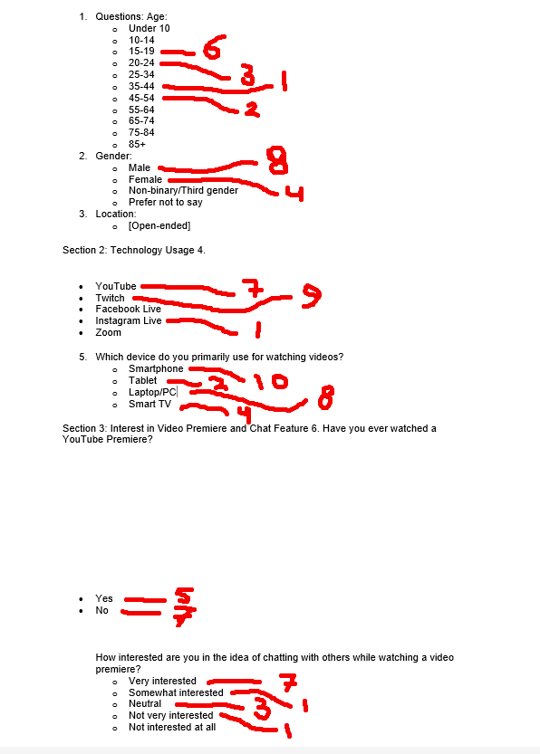

Introduction
This project is designed for engaging and interactive experiences where users can talk and watch videos together. You and your buddy can chat in real-time and connect with others while enjoying videos shared on the platform. The aim is to create a dynamic social environment where watching a video becomes a communal activity. Users can discuss, share reactions, and even make new friends as they watch.
LO1 – Interactive media products
Survey
I did this on paper after asking people in a store where I used to work. I needed to consider all the possible ages of my target audience, and I thought it would be a good idea for this project.
I found that my target audience is from the age group 10-24 (Gen-Z) and They mostly use YouTube and Twitch and they make use of the video premiere a lot. Also they like the idea of live chat and the ease of use, how easy accessible it is.
Gen-Z highly values interactivity, real-time communication, and user-friendly interfaces in video platforms. Enhancing these features and integrating more interactive elements will likely increase platform popularity among Gen-Z users.
Competitor analysis
YouTube Premieres is an innovative feature that blends the predictability of prerecorded content with the interactivity of live streaming. By enabling creators to schedule prerecorded videos for live broadcast, complete with live chat and donation capabilities, YouTube Premieres offers a unique way to engage audiences and generate revenue.
YouTube Premieres stands out as an innovative feature that seamlessly integrates the predictability of prerecorded content with the dynamic interactivity of live streaming. This unique offering allows creators to schedule prerecorded videos for live broadcast, facilitating real-time engagement through live chat and donation capabilities. In comparison to competitors like Twitch, Facebook Live, and Instagram Live, YouTube Premieres excels in areas such as scheduling flexibility, enhanced SEO, and comprehensive monetization options. The platform's ability to foster community building and provide detailed analytics further underscores its value for content creators. To maximize the potential of YouTube Premieres, strategic improvements in interactivity, monetization, and user experience are recommended, alongside targeted marketing and influencer collaborations. Incorporating age demographics into these strategies will ensure content is effectively tailored to diverse audience segments.
Persona's
Based on my research methods I made 2 persona's and finalized the information into 1.
.png)
.png)
.png)
Research - What UX/UI features most enhance Gen-Z engagement on a video-chat platform?
To effectively engage Generation Z on a video-chat platform, UX/UI design must cater to their distinct preferences and digital fluency. Born between 1997 and 2010, Gen Z seamlessly blends their online and offline lives, making digital connectivity an integral part of their identity. Unlike previous generations, they demand interfaces that are not just functional but also intuitive, efficient, and capable of providing real-time interaction. Key features that enhance their engagement include minimal waiting times, simplified navigation, real-time updates, and an integration of virtual and physical experiences. These elements reflect Gen Z's expectation for immediate satisfaction and their comfort with rapidly evolving technology.
In conclusion, the design of video-chat platforms must align with the unique characteristics of Generation Z to ensure high engagement and user satisfaction. This involves optimizing loading speeds to reduce waiting times, creating clear and easy-to-navigate interfaces, and facilitating instant communication and real-time updates. Additionally, interfaces should effectively blend virtual and physical experiences, catering to Gen Z's perception of a digitally integrated world. By focusing on these aspects, designers can create platforms that resonate with Gen Z’s digital-centric lifestyle, ultimately driving higher engagement and satisfaction.
Beta testing
In the beta testing I tested with my selected testers the features of my product. The testing is done with 5 people from my target audience.
I selected four testers and I made a list of all the features that were given me by the research before. The list contains of: Navigation, user alerts, play/pause, volume, theather modus, full screen, the use of chat & leave chat. With this list I made a small prototype/wireframe that is testing the most important key points.
.png)
.png)
.png)
.png)
All the functionalities worked correctly as intended, but there was some feedback. Users asked if there was an option to remove controls when in full screen. Additionally, they suggested adding a category filter to exclude full rooms. Another suggestion was to implement a feature to create friends on the platform, allowing users to chat with people they meet in rooms after watching a premiere together. Lastly, it was mentioned that the alerts could be displayed in a more entertaining way. These important things will be corrected in the next iterations.
LO2 – Development & version control
For the first home page I implented the socket system where there are different videos/rooms where people can join them.
When your connected to certain room you're able to chat with other people and talk about your toughts of a primiere for example.
Here I managed to setup a connection with a socket. I've learned how to connect with a socket and connect other people to it. This can be really helpful for later projects.
LO3 – Iterative design
Before the testing phase I had to come up with designs for the project and I came up with this.
Based on the results of the beta testing part (see beta testing) I made some further iterations.
.png)
.png)
After that I designed these itterations into final high fidelity designs.
.png)
.png)
LO4 – Professional standard
To ensure the project's success, I meticulously planned each phase from inception to completion. I started by outlining clear objectives, setting realistic deadlines, and allocating resources efficiently. Using project management tools, I tracked progress and adjusted plans as necessary to stay on schedule. My commitment to following the plan diligently resulted in smooth operations and timely delivery of milestones.
Maintaining open communication with the stakeholder was equally crucial. I regularly updated her on the project's status, sharing progress reports and any potential issues promptly. By keeping her informed, I fostered a strong, collaborative relationship, ensuring her expectations were met and that she felt confident in the project's direction. This proactive communication helped in addressing concerns early and maintaining alignment with the project's goals.
LO5 – Personal leadership
This semester, seeking and thinking about feedback has been important for my growth. Talking with professors, peers, and clients gave me different views on my work. It helped me see where I can improve and how to use my strengths better. Regular feedback and reviews made me see feedback as a way to keep learning and adjusting. Thinking about feedback made me better at my job and taught me about teamwork, talking well, and leading projects. Doing this made me stronger and better able to adjust at work.
As a future web developer, the skills and thinking I've learned will be important. Web development changes fast. Knowing the newest tech and trends is very important. By always asking for feedback from my team and clients, I can make sure my work is good and meets what the clients need. Thinking about feedback will help me make my coding better, design a better user experience, and find better solutions to problems. Having a growth mindset will help me deal with problems, make new ideas, and stay good at a job that is always changing. In the end, doing these things will help me make great web pages and do well in my job for a long time.